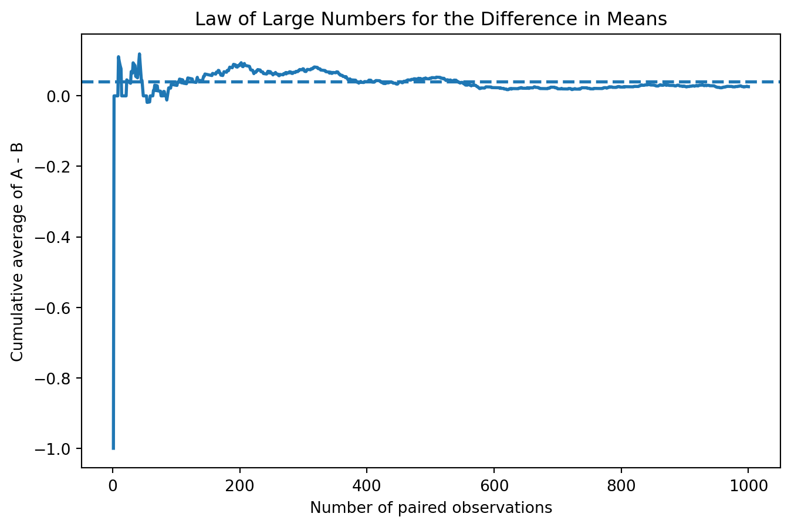

HW1: A/B Testing and Simulating Key Ideas in Frequentist Statistical Inference
Homework
A/B Testing
Statistics
Published
April 15, 2026
Introduction
A/B testing is one of the most common ways to evaluate whether a change in website design or copy improves user behavior. In this post, I use a simulated A/B test to study several core ideas in frequentist statistical inference.
The setting is a homepage call-to-action for a newsletter signup. Visitors are randomly assigned to see one of two messages, and each visitor either signs up or does not sign up. This creates a simple but useful example for understanding estimation, uncertainty, hypothesis testing, regression, and the danger of repeatedly checking results before data collection is complete.
The A/B Test as a Statistical Problem
Let X_Ai denote the outcome for user i in group A and X_Bi denote the outcome for user i in group B, where each outcome equals 1 if the user signs up and 0 otherwise. Then each observation can be modeled as a Bernoulli random variable with success probabilities pi_A and pi_B.
The quantity of interest is the difference in signup rates:
theta = pi_A - pi_B
A natural estimator is the difference in sample means:
theta_hat = Xbar_A - Xbar_B
If theta_hat > 0, version A appears to outperform version B in the sample. However, because the data are random, the observed difference will vary from one experiment to another. The rest of this post explores how frequentist tools help us reason about that variability.
Simulating Data
To make the analysis concrete, I simulate data from an experiment in which the true signup probability is 0.22 for version A and 0.18 for version B. This implies a true treatment effect of 0.04.
The observed difference in sample means is shown below.
theta_hat
0.026000000000000023
Even though the true treatment effect is 0.04, the realized estimate will generally not equal 0.04 exactly. This is the basic motivation for statistical inference: sample estimates fluctuate, even when the underlying data-generating process is fixed.
The Law of Large Numbers
The law of large numbers says that sample averages tend to get closer to their expected values as the sample size increases. In this context, that means the running estimate of the difference in means should gradually stabilize near the true effect.
To illustrate this, I compute the cumulative average of the observation-level differences A_i - B_i as the sample grows.
diffs = A - Brunning_mean = np.cumsum(diffs) / np.arange(1, n +1)running_df = pd.DataFrame({"n": np.arange(1, n +1),"running_mean": running_mean})running_df.head()
n
running_mean
0
1
-1.0
1
2
0.0
2
3
0.0
3
4
0.0
4
5
0.0

At small sample sizes, the running average moves around quite a bit. As the sample grows, the estimate becomes more stable and moves closer to the true value of 0.04. This is exactly what the law of large numbers predicts.
Bootstrap Standard Errors
A point estimate alone is not enough; we also want to know how uncertain that estimate is. One way to quantify uncertainty is with a standard error. In this section, I estimate the standard error of theta_hat using the bootstrap.
The bootstrap repeatedly resamples the observed data with replacement, recomputes the estimator in each resample, and uses the variability across bootstrap replications as an estimate of sampling uncertainty.
The bootstrap standard error is very close to the analytical standard error. That is reassuring: both approaches suggest a similar level of uncertainty around the observed treatment effect. Using the bootstrap standard error, the approximate 95% confidence interval is reported above.
The Central Limit Theorem
The central limit theorem helps explain why many estimators have approximately normal sampling distributions when the sample size is large. To study this idea, I repeatedly simulate the estimator theta_hat under different sample sizes.
With small sample sizes, the distribution of the estimator is rougher and more dispersed. As the sample size increases, the distribution becomes more concentrated and more bell-shaped. This is the central limit theorem at work.
Hypothesis Testing
A common question in A/B testing is whether the observed difference is large enough to reject the null hypothesis of no treatment effect.
Here I test the null hypothesis that the treatment effect equals zero against the alternative that it is not zero, using a z-statistic based on the analytical standard error.
The p-value measures how surprising the observed estimate would be if the true treatment effect were actually zero. A small p-value provides evidence against the null hypothesis. In this simulation, the p-value is low enough to suggest that the difference between the two versions is unlikely to be explained by random variation alone.
The T-Test as a Regression
A difference-in-means test can also be written as a regression. Define an outcome variable Y equal to signup status and a treatment indicator D equal to 1 for group A and 0 for group B. Then consider the linear model:
Y = beta_0 + beta_1 D + u
In this setup, beta_0 is the mean outcome in group B, and beta_1 is the difference in means between groups A and B. That means beta_1 estimates the same quantity as theta_hat.
The coefficient on the treatment indicator is the estimated effect of version A relative to version B. As expected, this regression coefficient is the same difference in sample means studied earlier. This provides a useful bridge between classical A/B testing and regression-based analysis.
The Problem with Peeking
One of the most important practical issues in experimentation is peeking, or repeatedly checking significance during data collection and stopping early when the result looks favorable. This can inflate the false positive rate.
To demonstrate this, I simulate experiments under the null hypothesis, where both versions have the same true signup rate of 0.20. In each experiment, I check significance after every additional 100 observations per group, up to 1,000 observations. If the p-value falls below 0.05 at any checkpoint, I count that experiment as a false positive.
Under proper single-shot testing at the 5% significance level, the false positive rate should be close to 0.05. However, when repeatedly checking results and stopping whenever significance appears, the probability of a false rejection becomes noticeably larger. This demonstrates why peeking is problematic in practice.
Conclusion
This simulated A/B test provides a compact illustration of several core ideas in frequentist inference. The law of large numbers explains why estimates stabilize with more data, the bootstrap and analytical formulas quantify uncertainty, and the central limit theorem helps justify normal approximations for large samples.
The same A/B test can also be understood through hypothesis testing and regression, showing how these tools are closely connected. Finally, the peeking simulation highlights an important practical warning: even when there is truly no treatment effect, repeated checking can produce misleadingly significant results.
Overall, frequentist methods provide a useful framework for analyzing A/B tests, but they must be applied carefully and interpreted with attention to uncertainty, sample size, and experimental design.